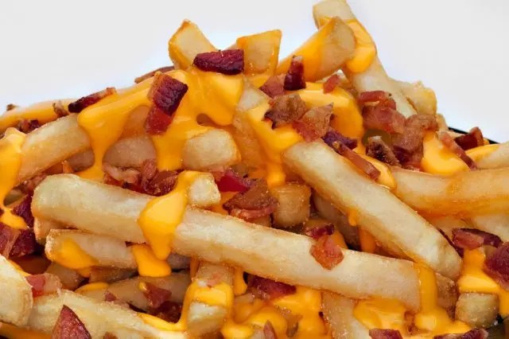

SPECIAL FRIES RECIPE

Photo of Fries with Bacon and Cheese :Q___
These low-carb, deliciously cheesy fries are a great replacement for the carby Mr. Potato Head fries you got in your previous, unhealthy life.
Ingredients:
- 2 cups of jicama sticks
- 3 slices of bacon
- 2 tablespoon of avocado oil, divided
- Salt to taste
- 1 cup of shredded Cheddar Cheese
Steps:
- Preheat the oven to 350 °F (175 °C). Line a sheet pan with parchment paper.
- Bring a pot of salted water to a boil. Slice jicama sticks into quarters and add to the boiling water. Boil for 10 minutes.
- At the same time, cook bacon in a large skillet over medium-high heat, turning occasionally, until evenly browned, about 10 minutes. Drain bacon slices on paper towels and crumble when cool enough to handle. Reserve bacon grease. Remove jicama from the water and pat dry.
- Toss jicama in a bowl with bacon grease and 1 tablespoon avocado oil to coat. Spread in a single layer on the prepared pan.
- Bake in the preheated oven for 30 minutes. Remove from the oven and turn on the broiler.
- Heat remaining 1 tablespoon avocado oil in a skillet. Add jicama and fry until desired crispness, about 5 minutes.
- Spread jicama back onto the baking pan. Season with salt, then cover with Cheddar Cheese and crumbled bacon. Broil until cheese is melted, about 3 minutes.